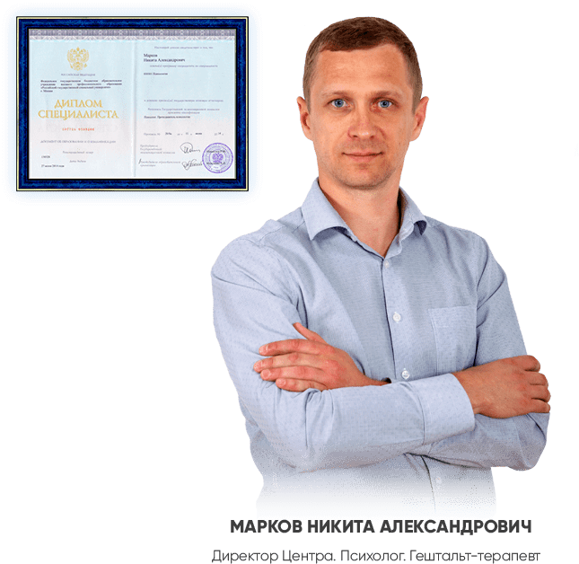

НАРКОЛОГИЧЕСКИЙ ЦЕНТР "LOTUS-CLINIC"
Внимание Акция!!! Реабилитация от 30000 руб.
ОТ АЛКОГОЛИЗМА И НАРКОМАНИИ
Скачайте бесплатную статью
«КАК ВЫБРАТЬ ЦЕНТР РЕАБИЛИТАЦИИ»
ПОСМОТРИТЕ КОРОТКИЙ
ВИДЕОРОЛИК
О НАШЕМ ЦЕНТРЕ
МЕТОДЫ ЛЕЧЕНИЯ
ЗАВИСИМОСТИ:
МОТИВАЦИЯ
Наш психолог поможет зависимому принять решение о необходимости лечения
ДЕТОКСИКАЦИЯ
Выведение из организма всех вредных веществ
СНЯТИЕ ЛОМКИ
Снятие ломки под присмотром квалифицированных врачей
ЛЕЧЕНИЕ
Устраним психологические причины употребления, восстановим личность, научим жить без наркотиков и алкоголя
РЕАБИЛИТАЦИЯ
Восстановим социальную сферу, отношения с родными, поможем найти работу и самореализоваться
РЕСОЦИАЛИЗАЦИЯ
Пожизненная поддержка и консультация для избежания срывов
ГАРАНТИРУЕМ 100%
АНОНИМНОСТЬ
ВАС НЕ ПОСТАВЯТ НА УЧЕТ
Данные о клиенте строго конфиденциальны и никуда не передаются
МЫ ГАРАНТИРУЕМ АНОНИМНОСТЬ
Вы можете обратиться в нашу клинику под вымышленным именем
ПОСТОРОННИМ НЕТ ДОСТУПА К НАШИМ КЛИЕНТАМ
Мы не отвечаем на запросы о наших клиентах. Доступ закрыт на территорию центра
6 ПРИЧИН ОБРАТИТЬСЯ
ИМЕННО К НАМ
ЧТО ВЫ ПОЛУЧАЕТЕ,
ОБРАТИВШИСЬ К НАМ В ЦЕНТР
Комфортные условия
реабилитации
С помощью профессиональных психологических методик, наши специалисты убедят человека в необходимости лечения не принуждая его, а создавая правильный мотивационный фон
Комфортные условия
реабилитации
С помощью профессиональных психологических методик, наши специалисты убедят человека в необходимости лечения не принуждая его, а создавая правильный мотивационный фон
Комфортные условия
реабилитации
С помощью профессиональных психологических методик, наши специалисты убедят человека в необходимости лечения не принуждая его, а создавая правильный мотивационный фон
Комфортные условия
реабилитации
С помощью профессиональных психологических методик, наши специалисты убедят человека в необходимости лечения не принуждая его, а создавая правильный мотивационный фон
Комфортные условия
реабилитации
С помощью профессиональных психологических методик, наши специалисты убедят человека в необходимости лечения не принуждая его, а создавая правильный мотивационный фон
Комфортные условия
реабилитации
С помощью профессиональных психологических методик, наши специалисты убедят человека в необходимости лечения не принуждая его, а создавая правильный мотивационный фон
ЧТО ДЕЛАТЬ,
ЗАВИСИМЫЙ НЕ ХОЧЕТ ЛЕЧИТЬСЯ?
и других стран ЗА 24 ЧАСА
НАШИ СПЕЦИАЛИСТЫ,
ПОМОГУТ ВАМ



{kind=link}
ОТЗЫВЫ
ОСТАЛИСЬ ВОПРОСЫ?
в решении Вашей проблемы